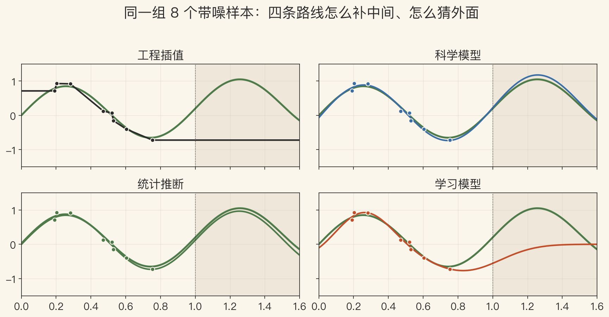
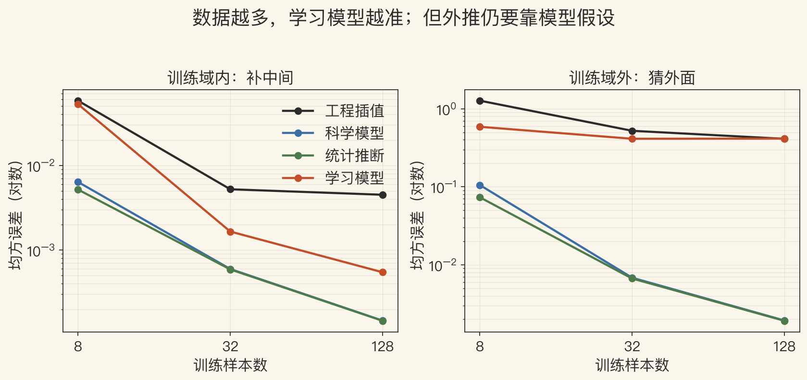
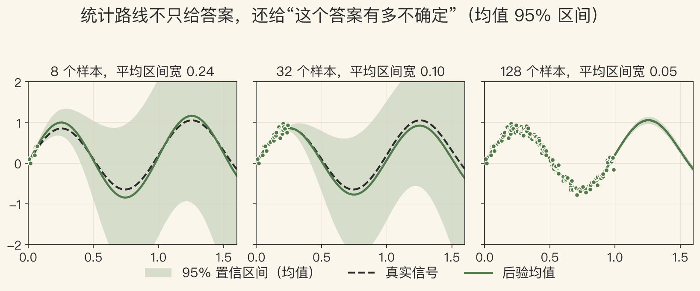

第 15 章 · 结论
先收束，再谈未来
- 这一集不教新算法，只把全书收进一个框架。
- 第 15 章只有四页，没有公式，只有判断。
- 先看为什么学、怎么学、往哪走。
- 再用一个一维实验，把四条路线放在一起。
依据：原书第 915–918 页
十年进展
算法、算力、数据、产品一起往前推
- 识别性能超过十年前。
- 深度学习也进入图像增强、运动估计、三维形状恢复。
- 实时跟踪与重建撑起自动驾驶和手机增强现实。
- 计算摄影进入每部手机，成像质量超过更贵的传统相机。
依据：原书第 915 页
领域为什么宽
定义宽，成像本身也复杂
- 定义：用图像和视频捕获、分析、解释三维环境。
- 成像本身复杂：光照、镜头、噪声、传感器。
- 书上比作汽车工程：要懂很多门学问。
- 可以从物理、数学、工程、数据四个方向切进去。
依据：原书第 915–916 页
四条方法论
工程、科学、统计、学习
- 工程：怎么把问题做成。
- 科学：成像的物理规律。
- 统计：不确定性和先验。
- 学习：从数据里找规律。
依据：原书第 916 页
四类工具
同一个问题常常四类都要用
不是四个门派
是四种思维习惯
一维实验 · 四条路线
同样 8 个样本，四种答案
- 工程插值：样本之间连线，域外夹平。
- 科学模型：3 个参数贴近曲线，外推也稳。
- 统计推断：在同一模型上加不确定性。
- 学习模型：16 个 RBF 中心，样本少时插值都抖。
依据：本集实验（合成信号，基函数已知）

同一组 8 个带噪样本：四条路线的插值与外推｜程序生成，未用教材原图
工程法
先界定问题，再做可重复的测试
- 界定问题，质疑基本假设和目标。
- 实现多个备选，测试可靠性和计算代价。
- 放到真实场景部署评估。
- 核心不是第一版代码，而是可重复的测试和评估。
依据：原书第 916 页
三个问题
到底要解决什么
还有没有别的做法
真实世界稳不稳
学习法 · 数据效率
数据补得了中间，补不出外面
- 样本 8→128，学习模型插值误差 0.0528→0.0005。
- 外推一直在 0.41 左右。
- 科学模型 128 样本外推只有 0.0019。
- 参数多不等于会外推；数据多不等于什么都懂。
依据：本集实验

数据越多插值越准；外推仍要靠模型假设｜程序生成，未用教材原图
科学法
知道成像怎么来，才能反演回去
- 物理：自然和人造结构、光照、大气、光学、传感器。
- 用稳定高效的算法反演成像。
- 镜头畸变、噪声模型、光照模型都是抓手。
- 要提出假设、做实验验证，和工程测试相通。
依据：原书第 916 页
统计法 · 不确定性
不只给答案，还给可信度
- 贝叶斯推断：先验 + 测量模型。
- 8/32/128 样本，均值 95% 区间宽 0.245/0.096/0.048。
- 覆盖率 92.7%/93.5%/94.5%。
- 区间太宽等于没说；宽度本身就是信息。
依据：原书第 916 页 + 本集实验

统计路线：均值 95% 区间随样本增加而变窄｜程序生成，未用教材原图
学习的边界
强，但不是免检
- 数据偏了、场景变了、标注错了，网络会悄悄失效。
- 先查数据，再查模型，再查评估口径。
- 评估口径一变，同样的模型可能从满分变不及格。
- 训练集内的漂亮曲线，不等于真实世界的把握。
依据：原书第 917 页 + 本集实验
Nayar 的第一性原理
原理能省事、能诊断、能合成数据
- 能用原理精确描述的现象，不必费力训练网络。
- 网络表现不好时，第一性原理帮助理解原因。
- 数据难采或不可行时，可以用原理合成数据。
- 还有第四条：好奇心，人想知道为什么。
依据：原书第 917 页
四条
能描述就不硬训
坏了先找原因
没数据就合成
好奇为什么
未来与下一集
架构会变，问题还是从像素到理解
- 前馈卷积会继续演进，加入注意力和自上而下反馈。
- 专用传感器、IMU、主动传感让定位与三维更可靠。
- 最难的应用仍在通用人工智能。
- 视觉已在摄影、视效、医疗、监控、搜索、推荐、助盲上产生影响。
依据：原书第 917–918 页